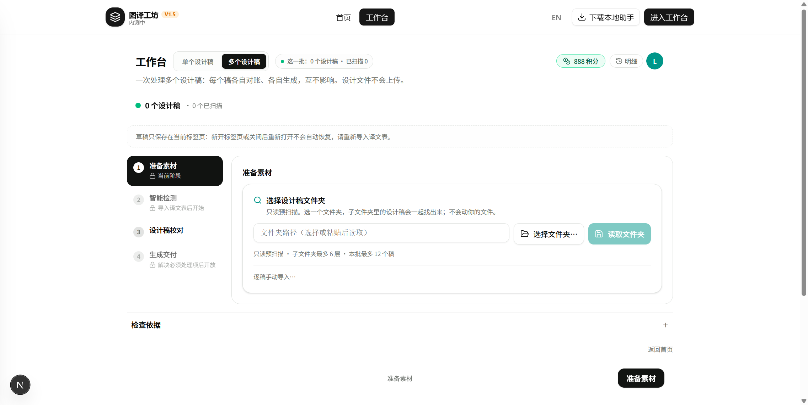
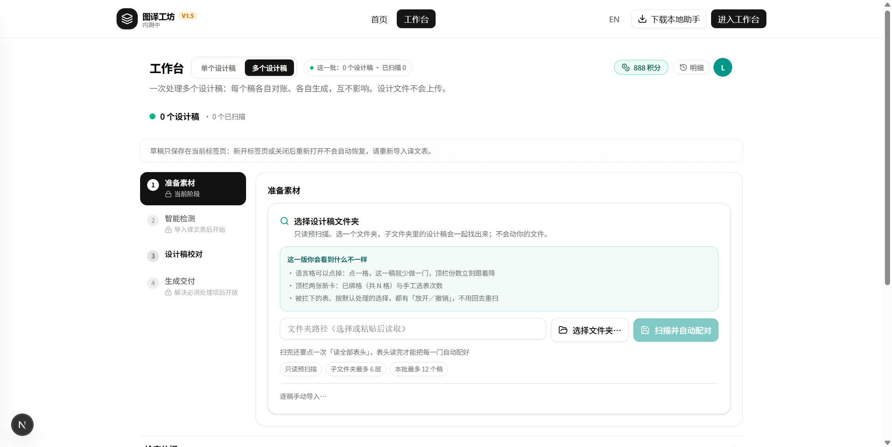

落地记录：UI 可见改动
2026-10-27 08:4x→09:0x · 流程＝方案 v1 → 对抗式审查打回（9 条 Important）→ 方案 v2 → 照 v2 执行 · 基线 develop 41a0fd65
这次是真的换了版面，而且图在仓库里，不是我口头说
第 1 步空态多出"这一版你会看到什么不一样"清单、按钮改名「扫描并自动配对」、约束拆成标签；格子不再整片黄；第 4 步范围卡变两列小表、语言区变六列网格。
第 1 步空态多出"这一版你会看到什么不一样"清单、按钮改名「扫描并自动配对」、约束拆成标签；格子不再整片黄；第 4 步范围卡变两列小表、语言区变六列网格。
45契约对账门判据（rc=0）
50本轮单元断言全过
145批量套件回归（108＋37）
5/5本轮负控真红
0tsc / lint 错误
改前 ｜ 改后（同一视口、同一账号、同一入口）
改前 · 08:51

改后 · 09:01

图片路径：交付档案/证据_20261027_UI可见改动/（第一次 08:57 的"改后"拍到的是另一会话在飞路由造成的 Build Error 覆盖层，那张作废，已在 改前基线.txt 记一行）。
审查砍掉的四条（照 v1 做等于白做）
| v1 要做的 | 为什么撤 |
|---|---|
| 改 coverage-matrix.tsx 染色 | 那矩阵藏在 hidden 分支（workbench-view.tsx:5216/:5252），用户看到的是 step1-stage-view.tsx 的 CELL_CLASS ⇒ 改完界面零变化，截图会和改前一模一样（I-1）。 |
| 算式「格 ＝ 已绑 − 剔除」 | totalCells 已经是剔除后的数，"已绑"没传进执行步 ⇒ 写出来两边相等，是假改动（I-3）。 |
| 语言格"缺表／不做"两态 | batchSummary 没这两个维度，无表的稿连 chip 都不生成（I-5）。 |
| 日志按稿聚合、只重跑失败项 | 日志是被整体替换的字符串、面板只有语言维；重试要先重建服务端冻结的 expectedRowTokens 行集（I-6／I-7）。 |
执行中又抓到我自己两条
门的"部分·点名"档从不判失败——负控 U-β 一删自动扫描，门照样绿。根因是判定写成"只有『已对』才计失败"。修成"除推迟／未做外都必须过"，U-β 随即真红。这是本次会话第二条同类假绿（前一条是"按函数名前缀判存在"），共同形状：判据看着有，实际不参与裁决。
v1 谎报了自己的证据：方案写"08:29 那张截图已落盘"，其实从没存过文件。v2 因此把"改前先落盘、存不出 PNG 就不许动代码"写成任务 0 的硬闸。
运行证据
| 命令 | 结果 |
|---|---|
| node scripts/smoke-step1-mock-contract.mjs | rc=0 · 判据 45 项／23 行（契约 4→已对，契约 6→部分·点名并写明缺哪半） |
| npx vitest run stage-folder-gate / step1-stage-view / slot-scope | 50 passed |
| npm run test:workbench-batch-groups ／ test:table-grouping | rc=0 · 108 passed ／ rc=0 · 37 passed |
| npm run test:batch-row-contract | rc=0 |
| npx tsc --noEmit ／ npm run lint | rc=0 ／ rc=0（0 errors） |
| node tmp/nc-ui.mjs | ALL NC BIT：U-α 黄填充加回／U-β 删自动扫描／U-γ 退回 flex／U-δ 删两列表／U-ε 清单删一条，五条退出码全 1、逐条还原 md5 一致 |
| node tmp/nc-step1.mjs | rc=0 · ALL NC BIT（上一轮那五条没被这轮碰坏） |
| 真浏览器 DOM 实测（本机 dev PID 51216） | 有清单 true／有新按钮 true／有表头提示 true／三枚标签 true／编译错误 false |
没做到的
- 第 4 步与"扫完之后"的截图没拿到：那两屏要批次数据，本机这个一次性账号没连本地助手、也没选真实语料。按规矩标"未取到"，不拿模拟件图凑。
- 一键只做到"读文件夹 → 自动开始扫描"，读表头仍手动（原因写在界面上，也写在门里）。
- U-3 未观察：助手真在跑时一键能否顺利接上扫描，这次没有助手在场。
- 一处偏离 v2：任务 3.4／4.4 的渲染级单测改由静态门承担（渲染 ExecuteStep 要整套 props，正是审查点明的"自成一个工程"）；代价是门只证"结构在不在"。
- 本地一次性账号 local-viewer@example.invalid 的口令不写在这里，存在本机 worktrees/develop/tmp/reg.json 与 tmp/login.json；要删号说一句即可，只影响本机 db/custom.db。